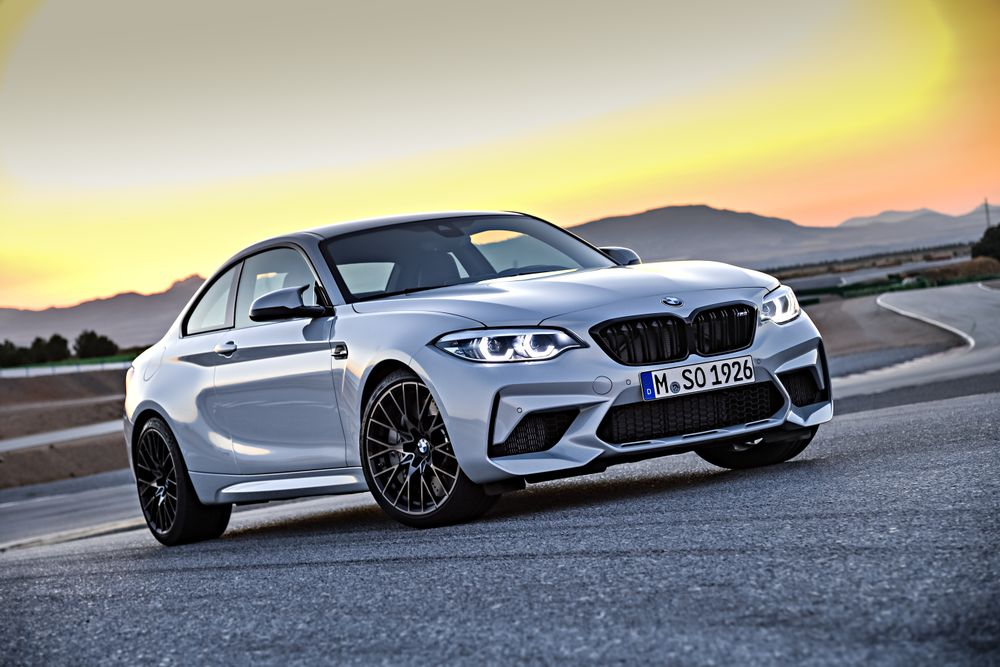
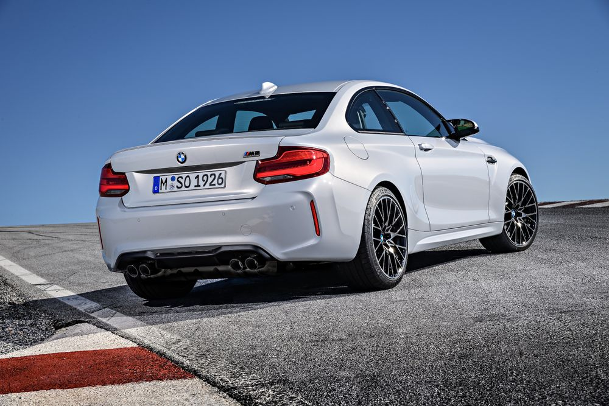
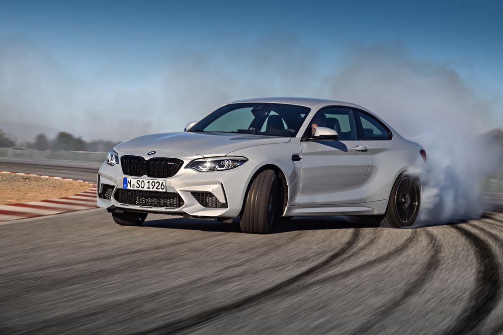
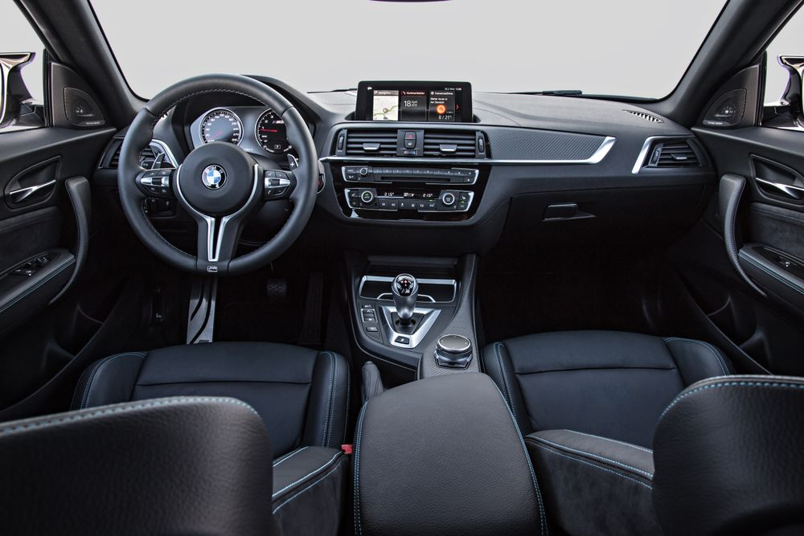

The New M4-Engined BMW M2 Competition Has Killed Off The Standard Car
BMW's new M2 packs an 'S55' twin-turbo straight-six and an appetite for RS Audi TTs

Following last week’s leak, BMW’s M2 Competition has gone official. And my word, do we want one.
As suspected for some time - and as good as confirmed by the leaked info last week - under the M2 Comp’s bonnet you’ll find an engine “based on the power unit from the BMW M3/M4.” It’s slightly less powerful at 404bhp, but with 404lb ft of twist on tap, it has the same torque figure as its two big brothers.

A sizeable jump from the M2’s 364bhp and 369lb ft figures, and the extra thrust allows for a 0-62mph time of 4.2 seconds in the DCT-equipped version - 0.2sec quicker than the standard car. The manual meanwhile will do the same in 4.4 seconds.
Again, nothing we didn’t already know thanks to last week’s - ahem - early reveal, but here’s a new detail for you: the M2 Competition actually replaces the standard car. And we can see why - who’d want the boggo N55-engined version now?

Sitting above the S55 you’ll find something else pinched from the M3/M4 parts bin: a carbonfibre reinforced plastic strut brace. The electric power steering has been recalibrated to complement the front end’s increase in stiffness.
In terms of aesthetics, we have a reshaped bumper at the front plus enlarged, gloss black kidney grilles, new ‘double-arm’ aero-friendly wing mirrors and repositioned quad tailpipes at the back. Oh, and a nice black ‘M2 Competition’ badge on the boot lid to finish things off.

The 19-inch wheels are new too, although there are forged rims of the same size available as an option. Beefier M Sport six-piston front/four-piston rear brakes are on the menu too, if you fancy them.
Expecting a huge price rise for all the changes? Allow us to deliver a pleasant surprise: the manual version is £49,285, about £2500 more than the car it replaces. The automatic meanwhile is £51,930, which is still cheaper than the Audi TT RS.
The first UK-spec cars will be landing this August.
Related Posts

Jaguar Has Killed Off The Supercharged V6 XE And XF

You're Probably Not Having As Bad A Day As This Aston Martin DBS Owner

US Car Makers Want To Make Premium Petrol The New Minimum

This Unique 1967 Corvette L88 Is The US Legend You Can’t Drive

This Dodge Demon Isn't So Handsome After Hitting Parked Cars

Fredric Aasbo's New Ride Is A 1000bhp Toyota Auris Drift Machine